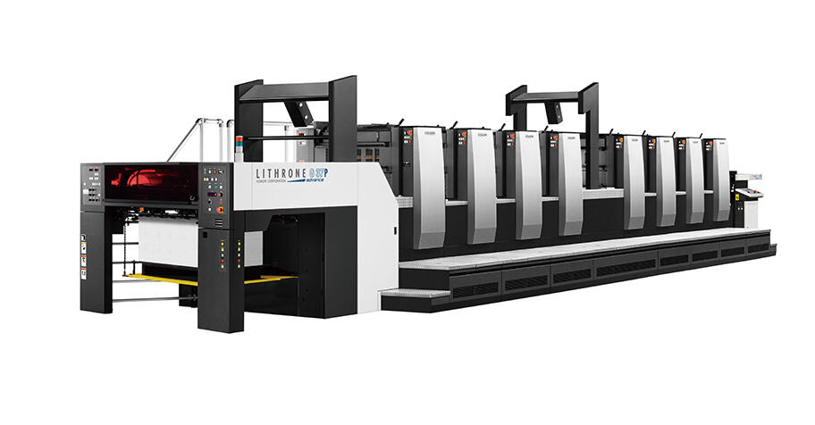

At SKE Graphic Machinery, we understand that every printing project is unique. That's why we offer a comprehensive range of offset printing machines designed to
handle various applications, from commercial printing to packaging and more. Our expert team is passionate about helping our clients achieve their printing goals, providing personalized support
and solutions tailored to your specific requirements.
We believe in building long-term relationships with our customers, grounded in trust, transparency, and mutual success. As we continue to evolve and innovate, our focus remains on
delivering exceptional value and exceeding expectations. Partner with SKE Graphic Machinery and experience the difference that our cutting-edge offset printing machines
can make for your business.
PRODUCTS
Heidelberg offset printing machines are synonymous with precision, innovation, and reliability.
As a leader in the printing industry, Heidelberg offers state-of-the-art solutions designed to meet the demands of modern
print shops, from small businesses to large-scale commercial operations..
The Komori offset printing machine is a state-of-the-art solution designed for print shops that demand precision,
speed, and reliability. Komori's advanced technology and robust engineering ensure superior print quality and efficiency, making it a
preferred choice for diverse printing needs.

The MAN Roland 506 UV/IR is a versatile and advanced offset printing machine
designed to meet the high demands of modern printing operations. Equipped with both UV and IR drying technologies, this machine
offers exceptional flexibility and performance for various printing applications.
SERVICES
Installation and Setup:
We provide comprehensive installation and setup services for all our offset printing machines.
Our technicians ensure that your new equipment is installed correctly and optimally configured for your operations,
minimizing downtime and ensuring a smooth transition.
Maintenance and Repairs:
Regular maintenance is crucial for the longevity and performance of your printing machines. Our skilled technicians
offer routine maintenance services to keep your equipment in top condition. In case of any issues, our repair services ensure that
your machines are back up and running with minimal disruption.
Spare Parts Supply:
We maintain a comprehensive inventory of genuine spare parts for all our offset printing machines. Our prompt and reliable spare
parts supply service ensures that you have access to the components you need to keep your operations running smoothly.
Technical Support:
Our dedicated technical support team is always available to assist you with any questions or issues you may encounter.
Whether it's troubleshooting a problem or offering advice on best practices, we're here to ensure you get the most
out of your printing machines.